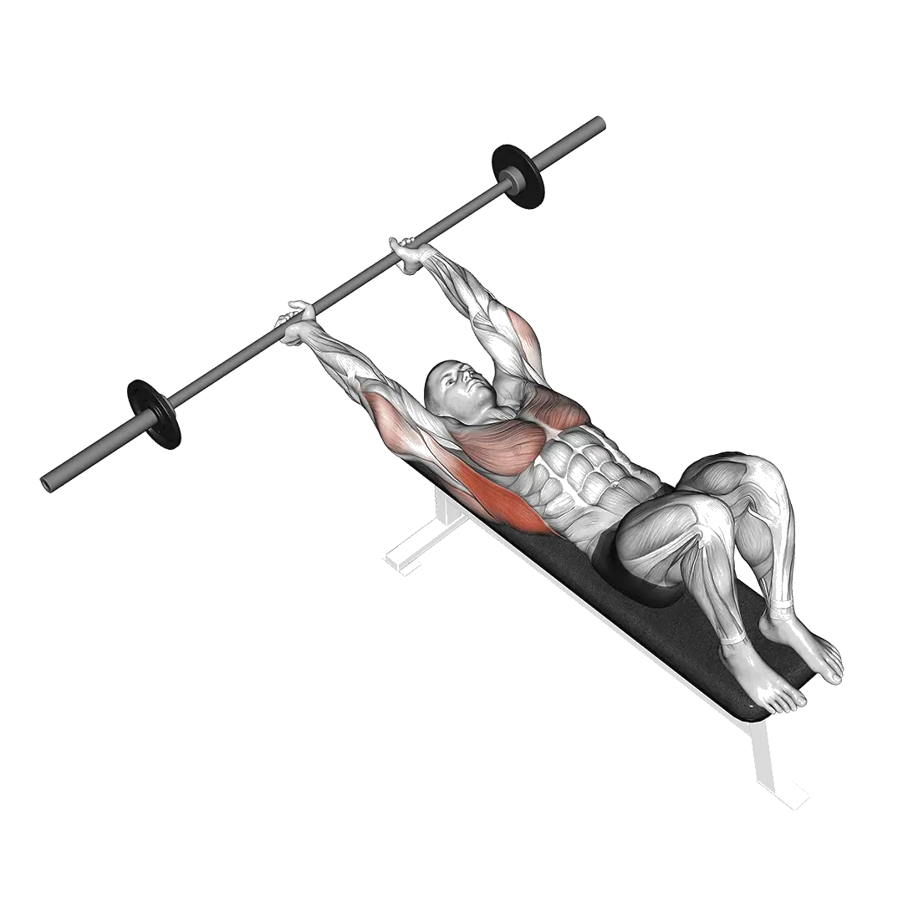

중급 평균 중량
평균적인 중급자의 기준입니다.
남성
103 lb
여성
31 lb
바벨 풀오버 평균 중량 [1RM]
| 레벨 | ||
|---|---|---|
| 입문 | 27 lb | 10 lb |
| 초급 | 58 lb | 18 lb |
| 중급 | 103 lb | 31 lb |
| 상급 | 161 lb | 46 lb |
| 엘리트 | 228 lb | 63 lb |
참고: 이 기준은 평균적인 리프터의 1RM을 기준으로 한 추정치입니다. 체중, 나이 등 개인 요인에 따라 달라질 수 있습니다. 자세한 데이터는 아래 표에서 확인하세요.
바벨 풀오버 기준 중량(lb)
남성 체중별(lb) 데이터 [1RM]
| 체중 | 입문 | 초급 | 중급 | 상급 | 엘리트 |
|---|---|---|---|---|---|
| 110 | 10 | 31 | 65 | 110 | 165 |
| 120 | 13 | 36 | 71 | 119 | 176 |
| 130 | 16 | 40 | 77 | 127 | 185 |
| 140 | 19 | 45 | 83 | 134 | 195 |
| 150 | 21 | 49 | 89 | 142 | 203 |
| 160 | 24 | 53 | 95 | 149 | 212 |
| 170 | 27 | 57 | 100 | 156 | 220 |
| 180 | 30 | 61 | 105 | 162 | 227 |
| 190 | 32 | 65 | 110 | 168 | 235 |
| 200 | 35 | 69 | 115 | 174 | 242 |
| 210 | 38 | 72 | 120 | 180 | 249 |
| 220 | 40 | 76 | 125 | 186 | 255 |
| 230 | 43 | 79 | 129 | 191 | 262 |
| 240 | 46 | 83 | 134 | 197 | 268 |
| 250 | 48 | 86 | 138 | 202 | 274 |
| 260 | 51 | 89 | 142 | 207 | 280 |
| 270 | 53 | 93 | 146 | 212 | 286 |
| 280 | 55 | 96 | 150 | 217 | 291 |
| 290 | 58 | 99 | 154 | 221 | 297 |
| 300 | 60 | 102 | 158 | 226 | 302 |
| 310 | 62 | 105 | 162 | 230 | 307 |
남성 나이별 데이터 [1RM]
| 나이 | 입문 | 초급 | 중급 | 상급 | 엘리트 |
|---|---|---|---|---|---|
| 15 | 23 | 49 | 88 | 137 | 194 |
| 20 | 26 | 56 | 100 | 157 | 222 |
| 25 | 27 | 58 | 103 | 161 | 228 |
| 30 | 27 | 58 | 103 | 161 | 228 |
| 35 | 27 | 58 | 103 | 161 | 228 |
| 40 | 27 | 58 | 103 | 161 | 228 |
| 45 | 26 | 55 | 98 | 152 | 216 |
| 50 | 24 | 52 | 92 | 143 | 203 |
| 55 | 22 | 48 | 85 | 132 | 188 |
| 60 | 20 | 44 | 77 | 121 | 171 |
| 65 | 18 | 39 | 70 | 109 | 155 |
| 70 | 16 | 35 | 63 | 98 | 139 |
| 75 | 15 | 32 | 56 | 88 | 124 |
| 80 | 13 | 28 | 50 | 78 | 111 |
| 85 | 12 | 25 | 45 | 70 | 99 |
| 90 | 11 | 23 | 41 | 63 | 90 |
여성 체중별(lb) 데이터 [1RM]
| 체중 | 입문 | 초급 | 중급 | 상급 | 엘리트 |
|---|---|---|---|---|---|
| 90 | 6 | 13 | 23 | 36 | 51 |
| 100 | 7 | 14 | 25 | 38 | 54 |
| 110 | 8 | 15 | 26 | 40 | 56 |
| 120 | 8 | 16 | 28 | 42 | 58 |
| 130 | 9 | 18 | 29 | 44 | 60 |
| 140 | 10 | 19 | 30 | 45 | 62 |
| 150 | 11 | 20 | 32 | 47 | 64 |
| 160 | 11 | 21 | 33 | 48 | 66 |
| 170 | 12 | 21 | 34 | 50 | 67 |
| 180 | 13 | 22 | 35 | 51 | 69 |
| 190 | 13 | 23 | 36 | 52 | 70 |
| 200 | 14 | 24 | 37 | 54 | 72 |
| 210 | 15 | 25 | 38 | 55 | 73 |
| 220 | 15 | 26 | 39 | 56 | 74 |
| 230 | 16 | 26 | 40 | 57 | 76 |
| 240 | 16 | 27 | 41 | 58 | 77 |
| 250 | 17 | 28 | 42 | 59 | 78 |
| 260 | 17 | 28 | 43 | 60 | 79 |
여성 나이별 데이터 [1RM]
| 나이 | 입문 | 초급 | 중급 | 상급 | 엘리트 |
|---|---|---|---|---|---|
| 15 | 8 | 16 | 26 | 39 | 54 |
| 20 | 9 | 18 | 30 | 45 | 62 |
| 25 | 10 | 18 | 31 | 46 | 63 |
| 30 | 10 | 18 | 31 | 46 | 63 |
| 35 | 10 | 18 | 31 | 46 | 63 |
| 40 | 10 | 18 | 31 | 46 | 63 |
| 45 | 9 | 18 | 29 | 44 | 60 |
| 50 | 9 | 16 | 27 | 41 | 56 |
| 55 | 8 | 15 | 25 | 38 | 52 |
| 60 | 7 | 14 | 23 | 35 | 48 |
| 65 | 7 | 13 | 21 | 31 | 43 |
| 70 | 6 | 11 | 19 | 28 | 39 |
| 75 | 5 | 10 | 17 | 25 | 35 |
| 80 | 5 | 9 | 15 | 22 | 31 |
| 85 | 4 | 8 | 13 | 20 | 28 |
| 90 | 4 | 7 | 12 | 18 | 25 |
참고: 일반적인 헬스장 바벨은 기본적으로 44lb입니다.
자극되는 근육
| 그룹 | 근육 |
|---|---|
| 주동근 | 광배근, 대흉근 |
| 보조근 | 상완삼두근, 대원근 |
| 안정근 | 외복사근, 삼각근 |
| 그립 | 전완 굴곡근군 |
기록과 분석은 Shiba 앱에서
중량, 반복 횟수, 성장 변화를 한곳에서 확인할 수 있습니다.
기준표 보는 법
| 레벨 | 설명 | 분포 |
|---|---|---|
| 입문 | 올바른 자세를 익히고 1개월 이상 꾸준히 운동하는 단계입니다. | 하위 5% |
| 초급 | 6개월 이상 꾸준히 운동한 단계입니다. | 상위 80% |
| 중급 | 2년 이상 꾸준히 운동한 단계입니다. | 상위 50% |
| 상급 | 5년 이상 꾸준히 운동한 단계입니다. | 상위 20% |
| 엘리트 | 해당 운동을 5년 이상 전문적으로 훈련한 단계입니다. | 상위 5% |
다른 운동
전신
데드리프트
전신 / BIG3
벤치프레스
전신 / BIG3
스쿼트
전신 / BIG3
헥스바 데드리프트
전신
파워 클린
전신
루마니안 데드리프트
전신
스모 데드리프트
전신
클린 앤 저크
전신
스내치
전신
클린
전신
클린 앤 프레스
전신
랙 풀
전신
덤벨 Romanian 데드리프트
전신 / 덤벨
행 클린
전신
스티프레그 데드리프트
전신
머슬업
전신 / 맨몸
파워 스내치
전신
쓰러스터
전신
푸시 저크
전신
덤벨 데드리프트
전신 / 덤벨
데피싯 데드리프트
전신
싱글레그 Romanian 데드리프트
전신
버피
전신 / 맨몸
행 파워 클린
전신
스플릿 저크
전신
덤벨 Snatch
전신 / 덤벨
클린 하이 풀
전신
스내치 데드리프트
전신
클린 풀
전신
포즈 데드리프트
전신
싱글레그 데드리프트
전신
머슬 스내치
전신
제퍼슨 데드리프트
전신
스내치 풀
전신
월볼
전신
저처 데드리프트
전신
싱글레그 덤벨 데드리프트
전신 / 덤벨
덤벨 Clean And 프레스
전신 / 덤벨
링 머슬업
전신 / 맨몸
덤벨 Thruster
전신 / 덤벨
행 스내치
전신
덤벨 하이 풀
전신 / 덤벨
덤벨 Hang Clean
전신 / 덤벨
비하인드 백 데드리프트
전신
클랩 풀업
전신 / 맨몸
스쿼트 쓰러스트
전신
가슴
벤치프레스
가슴 / BIG3
덤벨 벤치프레스
가슴 / 덤벨
푸시업
가슴 / 맨몸
인클라인 벤치프레스
가슴
인클라인 덤벨 벤치프레스
가슴 / 덤벨
클로즈그립 벤치프레스
가슴
머신 Chest 플라이
가슴 / 머신
덤벨 플라이
가슴 / 덤벨
디클라인 덤벨 플라이
가슴 / 덤벨
디클라인 벤치프레스
가슴
스미스머신 벤치프레스
가슴 / 머신
케이블 플라이
가슴 / 케이블
체스트 프레스
가슴
플로어 프레스
가슴
인클라인 덤벨 플라이
가슴 / 덤벨
덤벨 플로어 프레스
가슴 / 덤벨
디클라인 덤벨 벤치프레스
가슴 / 덤벨
포즈 벤치프레스
가슴
원암 푸시업
가슴 / 맨몸
리버스 그립 벤치프레스
가슴
다이아몬드 푸시업
가슴 / 맨몸
클로즈그립 덤벨 벤치프레스
가슴 / 덤벨
벤치 핀 프레스
가슴
와이드그립 벤치프레스
가슴
디클라인 푸시업
가슴 / 맨몸
클로즈그립 인클라인 벤치프레스
가슴
인클라인 푸시업
가슴 / 맨몸
클로즈그립 푸시업
가슴 / 맨몸
아처 푸시업
가슴 / 맨몸
스포토 프레스
가슴
등
데드리프트
등 / BIG3
풀업
등 / 맨몸
벤트오버 로우
등
랫풀다운
등
친업
등 / 맨몸
덤벨 로우
등 / 덤벨
시티드 케이블 로우
등 / 케이블
바벨 슈러그
등 / 바벨
티바 로우
등
덤벨 슈러그
등 / 덤벨
펜들레이 로우
등
머신 로우
등 / 머신
덤벨 풀오버
등 / 덤벨
덤벨 리버스 플라이
등 / 덤벨
체스트 서포티드 덤벨 로우
등 / 덤벨
클로즈그립 Lat 풀다운
등
머신 리버스 플라이
등 / 머신
리버스 그립 Lat 풀다운
등
뉴트럴 그립 풀업
등 / 맨몸
스트레이트 암 풀다운
등
케이블 리버스 플라이
등 / 케이블
예이츠 로우
등
벤트오버 덤벨 로우
등 / 덤벨
백 익스텐션
등
벤치 풀
등
머신 백 익스텐션
등 / 머신
바벨 풀오버
등 / 바벨
원암 풀업
등 / 맨몸
덤벨 벤치 풀
등 / 덤벨
인버티드 로우
등
레니게이드 로우
등
원암 Lat 풀다운
등
원암 시티드 케이블 로우
등 / 케이블
케이블 Upright 로우
등 / 케이블
머신 슈러그
등 / 머신
헥스바 슈러그
등
스미스머신 슈러그
등 / 머신
덤벨 인클라인 Y 레이즈
등 / 덤벨
케이블 슈러그
등 / 케이블
벤트암 바벨 풀오버
등 / 바벨
바벨 Power 슈러그
등 / 바벨
메도우스 로우
등
비하인드 백 바벨 슈러그
등 / 바벨
리버스 하이퍼익스텐션
등
어깨
숄더 프레스
어깨
덤벨 Shoulder 프레스
어깨 / 덤벨
덤벨 레터럴 레이즈
어깨 / 덤벨
밀리터리 프레스
어깨
시티드 Shoulder 프레스
어깨
시티드 덤벨 Shoulder 프레스
어깨 / 덤벨
머신 Shoulder 프레스
어깨 / 머신
푸시 프레스
어깨
업라이트 로우
어깨
덤벨 프론트 레이즈
어깨 / 덤벨
케이블 레터럴 레이즈
어깨 / 케이블
아놀드 프레스
어깨
페이스 풀
어깨
넥 컬
어깨
덤벨 Upright 로우
어깨 / 덤벨
머신 레터럴 레이즈
어깨 / 머신
비하인드 넥 프레스
어깨
핸드스탠드 푸시업
어깨 / 맨몸
바벨 프론트 레이즈
어깨 / 바벨
로그 프레스
어깨
랜드마인 프레스
어깨
넥 익스텐션
어깨
Z 프레스
어깨
바이킹 프레스
어깨
숄더 핀 프레스
어깨
덤벨 Z 프레스
어깨 / 덤벨
원암 랜드마인 프레스
어깨
덤벨 외회전
어깨 / 덤벨
파이크 푸시업
어깨 / 맨몸
덤벨 Push 프레스
어깨 / 덤벨
덤벨 Face 풀
어깨 / 덤벨
케이블 외회전
어깨 / 케이블
팔
덤벨 컬
팔 / 덤벨
바벨 컬
팔 / 바벨
해머 컬
팔
EZ바 컬
팔
프리처 컬
팔
케이블 Biceps 컬
팔 / 케이블
덤벨 컨센트레이션 컬
팔 / 덤벨
인클라인 덤벨 컬
팔 / 덤벨
머신 Biceps 컬
팔 / 머신
스트릭트 컬
팔
원암 케이블 Biceps 컬
팔 / 케이블
원암 덤벨 Preacher 컬
팔 / 덤벨
인클라인 해머 컬
팔
스파이더 컬
팔
조트맨 컬
팔
시티드 덤벨 컬
팔 / 덤벨
치팅 컬
팔
케이블 해머 컬
팔 / 케이블
오버헤드 케이블 컬
팔 / 케이블
인클라인 케이블 컬
팔 / 케이블
라잉 케이블 컬
팔 / 케이블
딥스
팔 / 맨몸
Triceps Pushdown
팔
Skull Crusher
팔
Triceps Rope Pushdown
팔
원암 Triceps Pushdown
팔
덤벨 Triceps 익스텐션
팔 / 덤벨
바벨 French 프레스
팔 / 바벨
라잉 덤벨 Triceps 익스텐션
팔 / 덤벨
시티드 딥스 머신
팔 / 머신
덤벨 킥백
팔 / 덤벨
케이블 오버헤드 익스텐션
팔 / 케이블
머신 Triceps 익스텐션
팔 / 머신
시티드 덤벨 French 프레스
팔 / 덤벨
리버스 그립 Pushdown
팔
JM 프레스
팔
테이트 프레스
팔
링 딥스
팔 / 맨몸
벤치 딥스
팔 / 맨몸
리스트 컬
팔
리버스 바벨 컬
팔 / 바벨
리버스 Wrist 컬
팔
덤벨 Wrist 컬
팔 / 덤벨
덤벨 리버스 Wrist 컬
팔 / 덤벨
덤벨 리버스 컬
팔 / 덤벨
하체
스쿼트
하체 / BIG3
슬레드 레그프레스
하체
프론트 스쿼트
하체
힙 쓰러스트
하체
레그 익스텐션
하체
호리존탈 레그프레스
하체
핵 스쿼트
하체
시티드 레그 컬
하체
덤벨 Bulgarian Split 스쿼트
하체 / 덤벨
고블릿 스쿼트
하체
라잉 레그 컬
하체
머신 카프 레이즈
하체 / 머신
덤벨 Lunge
하체 / 덤벨
박스 스쿼트
하체
맨몸 스쿼트
하체
버티컬 레그프레스
하체
불가리안 스플릿 스쿼트
하체
시티드 카프 레이즈
하체
스미스머신 스쿼트
하체 / 머신
힙 어브덕션
하체
굿모닝
하체
저처 스쿼트
하체
바벨 Lunge
하체 / 바벨
힙 어덕션
하체
오버헤드 스쿼트
하체
바벨 카프 레이즈
하체 / 바벨
덤벨 스쿼트
하체 / 덤벨
스플릿 스쿼트
하체
덤벨 카프 레이즈
하체 / 덤벨
케이블 풀 Through
하체 / 케이블
스탠딩 레그 컬
하체
랜드마인 스쿼트
하체
바벨 리버스 Lunge
하체 / 바벨
바벨 Glute Bridge
하체 / 바벨
싱글레그프레스
하체
슬레드 프레스 카프 레이즈
하체
싱글레그 스쿼트
하체
벨트 스쿼트
하체
세이프티바 스쿼트
하체
피스톨 스쿼트
하체
포즈 스쿼트
하체
바벨 Hack 스쿼트
하체 / 바벨
스모 스쿼트
하체
케이블 킥백
하체 / 케이블
맨몸 카프 레이즈
하체
런지
하체
글루트 브리지
하체
핀 스쿼트
하체
워킹 런지
하체
덤벨 프론트 스쿼트
하체 / 덤벨
덤벨 Split 스쿼트
하체 / 덤벨
리버스 Lunge
하체
스쿼트 점프
하체
노르딕 햄스트링 컬
하체
시시 스쿼트
하체
하프 스쿼트
하체
글루트 햄 레이즈
하체
케이블 레그 익스텐션
하체 / 케이블
싱글레그 시티드 카프 레이즈
하체
사이드 런지
하체
글루트 킥백
하체
동키 카프 레이즈
하체
덤벨 Walking 카프 레이즈
하체 / 덤벨
사이드 레그 레이즈
하체 / 맨몸
제퍼슨 스쿼트
하체
플로어 Hip 어브덕션
하체
힙 익스텐션
하체
플로어 Hip 익스텐션
하체
코어
싯업
코어 / 맨몸
케이블 크런치
코어 / 케이블
머신 시티드 크런치
코어 / 머신
크런치
코어 / 맨몸
덤벨 Side Bend
코어 / 덤벨
케이블 우드초퍼
코어 / 케이블
행잉 레그 레이즈
코어 / 맨몸
러시안 트위스트
코어 / 맨몸
라잉 레그 레이즈
코어 / 맨몸
디클라인 싯업
코어 / 맨몸
행잉 니 레이즈
코어 / 맨몸
AB 휠 롤아웃
코어
토즈 투 바
코어 / 맨몸
디클라인 크런치
코어 / 맨몸
점핑 잭
코어 / 맨몸
바이시클 크런치
코어 / 맨몸
리버스 크런치
코어 / 맨몸
플러터 킥
코어 / 맨몸
마운틴 클라이머
코어 / 맨몸
하이 풀리 크런치
코어 / 맨몸
스탠딩 케이블 크런치
코어 / 케이블
슈퍼맨
코어 / 맨몸
사이드 크런치
코어 / 맨몸
로만체어 사이드 밴드
코어
시저 킥
코어 / 맨몸